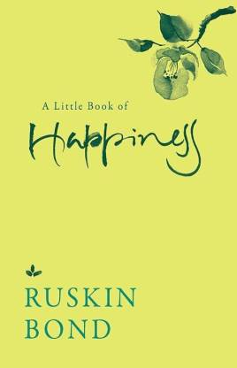
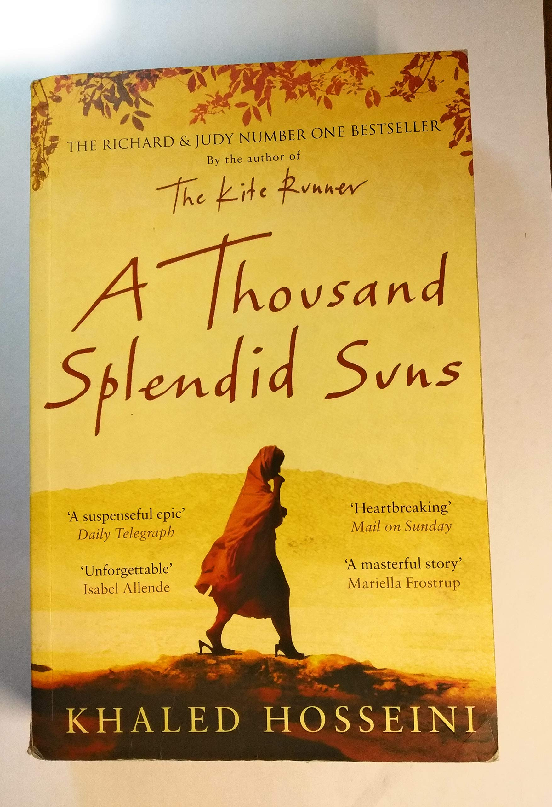

The Alchemist is a novel by Brazilian author Paulo Coelho
that was first published in 1988.
Originally written in Portuguese, it became a widely translated international bestseller.
Auther:Paulo Coelho
Publish: 1988
Price:149

Wings of Fire: An Autobiography of APJ Abdul Kalam, former President of India.
It was written by Dr. Abdul Kalam and Arun Tiwari.
Dr. Kalam examines his early life, effort, hardship, fortitude, luck and
chance that eventually led him to lead Indian space research,
nuclear and missile programs.
Auther: A. P. J. Abdul Kalam, Arun Tiwari
Publish: 1999
Price:270

Why be happy and how, and why not to worry if you think you are not.
- Why it is easy to be happy, and how you can miss happiness even if it stands before you.
- How a bird can fill you with joy and how a stranger's smile can soothe you.
- Why happiness may not even be the word for what we really need.
Auther:Ruskin Bond
Publish: 10 May 2016
Price:173

A Thousand Splendid Suns is a 2007 novel by Afghan-American author Khaled Hosseini,
following the huge success of his bestselling 2003 debut The Kite Runner.
Mariam, an illegitimate teenager from Herat, is forced to marry a shoemaker from Kabul after a family tragedy.
Auther:Khaled Hosseini
Publish: 22 May 2007
Price:190